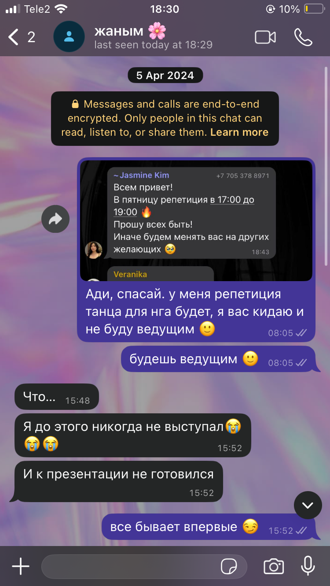
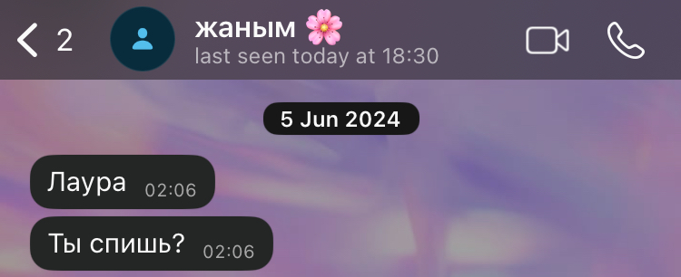
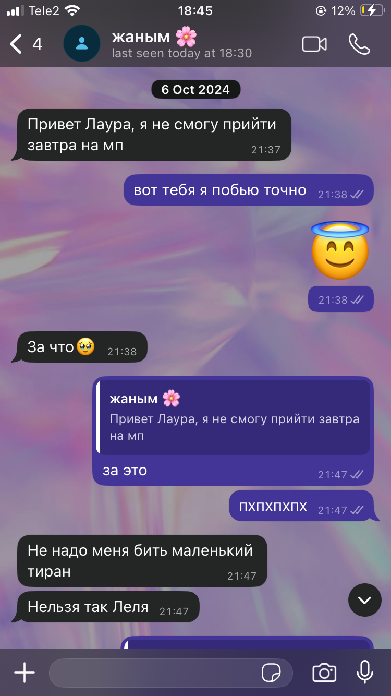
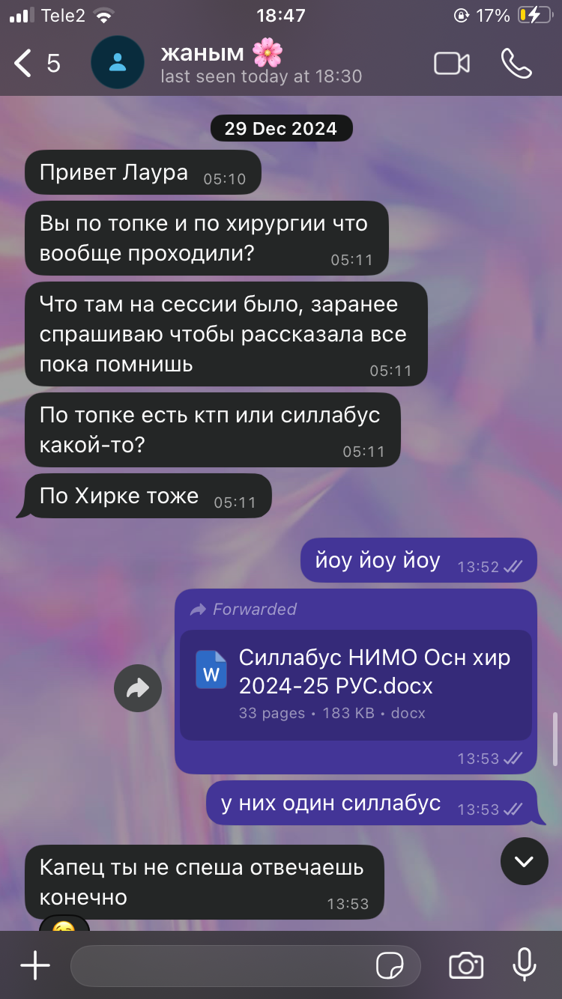
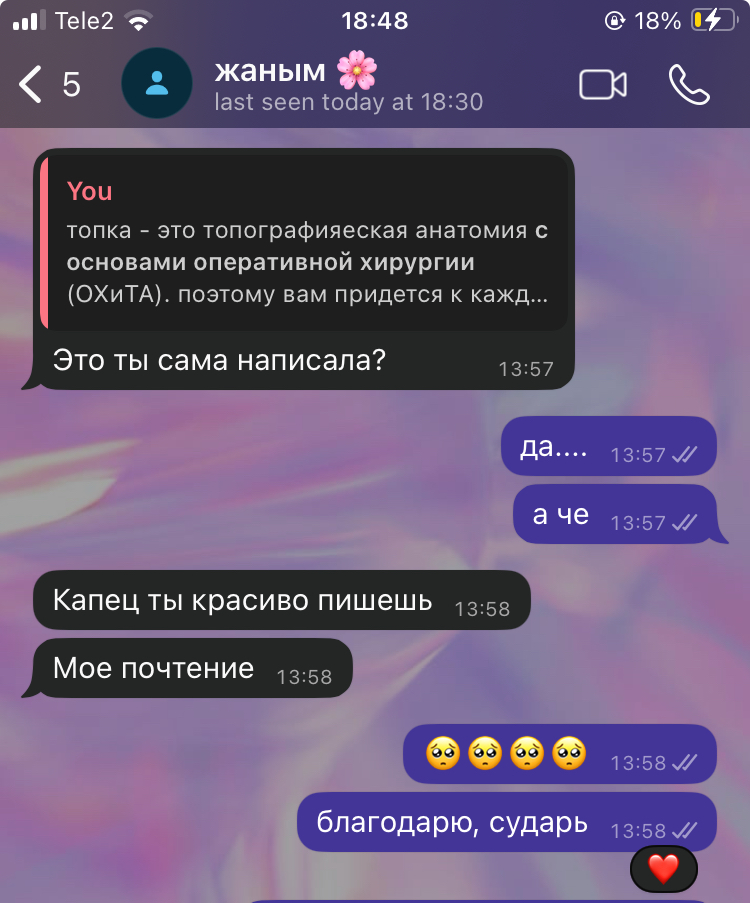

Первое воспоминание
Даже и не верится, что мы были знакомы очень-очень давно.
Я время от времени заглядываю в историю нашего чата, смотрю на первые сообщения. Это так забавно, вспоминать, как мы непринужденно, без задних мыслей общались чисто по казмса и ничего больше. Ведь в те моменты эти два человечка даже не думали, что их ждет в будущем. Это настолько ломает мне мозг, что иногда я даже не могу представить, что времена до тебя существовали.

Ади, спасай. Боже, неужели с этого началась наша переписка. Эта девочка даже не думала, что в будущем Ади будет не только спасать ее, но и поддерживать, одаривать теплотой, заботой и любовью. Очень многое происходило в жизнях обоих, однако через время ниточки судьбы сплелись в единое целое и с момента начала наших отношений я забыла, что значит проживать ее одной. Каждое событие, даже самое маленькое хочется афишировать для тебя и порой я чувствую себя маленьким ребенком, который рассказывает про то, какую кашу он ел в садике.

То самое "спишь?" в 2 часа ночи
Я очень часто думаю о словах, которые тебе когда-то сказал твой друг: "Лаура для тебя - подарок судьбы". Ведь в моей жизни подарком стал ты. И каким образом сложились звезды, что мы с тобой заобщались не сразу. Знаешь, словно произошел какой-то переломный момент в жизнях каждого. Это все было не просто так, не просто обстоятельства, как будто так все и было задумано - в то время и в том месте. Хотя учитывая весь жизненный опыт, мне иногда так грустно, что мы не заобщались с тобой раньше. Но следом появляется мысль - а вдруг так надо было? Вдруг мы должны были встретиться, пройдя испытания в прошлом, чтобы наши отношения были именно такими, какие они есть? И это меня подбадривает и успокаивает.

Я переживала довольно сложные времена до нашего с тобой общения: не доверяла никому, не хотелось ничего серьезного, чтобы снова не пораниться об осколки своего сердца. Запечатала свою эмоциональную, чувствительную и ранимую натуру в бетон и думала, что его расколит лишь чудо. Поэтому я и считаю тебя своим чудом, ведь из всех людей только у тебя получилось по-настоящему, словно рыцарю, пробраться сквозь злость драконов, камень и сталь, сковавшие в крепкие цепи мое сердечко. Мало того, что пробраться, так еще и навести в этом хаосе порядок, уют и тепло.

Вот наша переписка и дошла до того самого вопроса. Именно с твоего вопроса про топочку началось наше активное общение. Моя самая любимая часть этого диалога - как ты подметил, что я красиво пишу. А мне ведь действительно очень нравилось писать. В школьные времена я писала фанфики, короткие рассказы, истории, пыталась начать писать книги. Но я не могу вспомнить ни одного человека, который бы указал мне на то, как это красиво.
Мне было так радостно и так приятно. А дальше ты и сам помнишь - котики, потом детские фотки, потом песни; наш разговор продолжался и продолжался и нам обоим не хотелось, чтобы он заканчивался. Потом мы выяснили, что у нас очень много общих мнений об отношениях, о семье, которые особенно в современном обществе часто не принимаются. И это, пожалуй, ключевой момент: мы нашли друг друга, мы увидили друг друга среди всех людей на свете. И когда ты меня попросил присмотреть за котом, я вообще без капельки сомнения согласилась. Сама не знаю, почему мне было не страшно идти к мало знакомому человеку домой, но в тот момент я ощущала, будто мы уже миллион лет знакомы. А кто знает: может когда-то в абсолютном вакууме, за триллионы световых лет до земли - маленькие частицы кружились в физико-химическом вальсе и после большого взрыва их разнесло очень далеко и вот, они собрались, образуя двух хомо сапиенсов, которые притянулись невидимой силой и воссоединились спустя все это время. Такая романтика была присуща мне только раньше, когда мне нравилось писать, нравилось творить. Потом был очень долгий застой. Творческий застой для человека, который любил создавать, - это всегда больно. И, конечно же, как довольно пессимистичному человеку, мне казалось, что я больше никогда не вернусь снова к своим прошлым хобби. Но вот мы с тобой вместе, а я снова пришла к лирике и мне хочется писать красиво. Писать красиво для тебя.

И очевидно, в письме про первые воспоминания нельзя обойтись без нашего первого свидания. Когда 7 января 2025 года ты мне отправил букет цветов, причем заранее поинтересовавшись моими любимыми, честно, я даже не понимала, как к этому относиться. С одной стороны, я ничего не хотела надумывать себе и строить надежды, ведь рана оставалась свежей и страх боли от разбитых надежд был сильнее, чем эти самые надежды. С другой стороны, ты вел себя совсем по-другому и раньше ко мне так никто не относился - с такой нежностью, с такой внимательностью.
12 января 2025 года, мы идем на нашу первую встречу тет-а-тет, без других людей, без казмса, без компании. Только ты и я. Было так неловко, но так интересно, именно так, как должно проходить первое свидание. Но тот поцелуй... Боже, как же мне было страшно после него. В голове миллион мыслей: "блин, он подумает, что я испорченная", "господи, он подумает, что я так со всеми на первом свидании веду себя", "я теперь для него кажусь легкодоступной". Но ты же мой рыцарь, который бесстрашно рассекает мечом все мои страхи. Да, чтобы полностью начать доверять и больше не бояться, потребовалось не мало времени и испытаний. А самое главное, что все это было не зря.
Жаным, я тебя очень люблю!